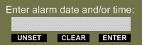

Smarter Stickies Help
Software "sticky" notes for your computer screen that are smart enough
to stay out of your way until you need them.
You can arrange to hide a Smarter Sticky until a specific time,
the next time you start your computer, or until you go looking for it.
- Multiple "stickies" may be individually sized and positioned.
- Stickies may be hidden until needed.
- Multiple mode search function.
- Individual stickies may be set to be shown when the widget starts.
- Each sticky has an alarm that may be set to show the sticky
at a specific time and date.
- Alarms may be set to repeat - daily, weekly, monthly, or annually.
- Stickies whose alarms have expired flash their borders
and sound an audible alert.
- User chosen fonts, colors, and alarm sound.
- Keyboard shortcuts ("hot keys") assigned by user.
The Smarter Stickies pad will be on the screen whenever the widget is running
(unless it has been hidden).
If something isn't working the way you expect,
you might look in the Known Bugs section of this document.
- To create a new sticky
- Double-clicking on the pad will create a new sticky.
The new sticky will be created in edit mode and selected
so you can just start typing or pasting its content.
You can also create a new sticky by selecting New Sticky
from the Pad Context Menu
or by dropping a text selection on the pad.
If you have assigned a "New Sticky" Hotkey,
it can be used.
Finally, you can make a copy of an existing sticky by selecting
Clone Sticky from its context menu.
You should move new stickies
to avoid stacking them all on top of each other.
- To edit sticky text
- Stickies in edit mode are identified by a different border color
(defaults to a darker color)
and the resize handle
( )
in their lower right corner.
You can switch into and out of edit mode by double-clicking
on the sticky or by selecting Edit Sticky
from the Sticky Context Menu.
Editing is much the same as in most simple text editors for Windows
(such as Notepad).
Text can be manipulated by dragging and dropping selections
with the mouse at any time
and, while in edit mode, by control key combinations.
- To resize a sticky
- While in edit mode you can resize the sticky by dragging the handle
( )
at the lower right corner.
Smarter stickies automatically wrap text
and display a vertical scroll bar if necessary.
- To move a sticky
- When not in edit mode,
you can move the sticky by dragging anywhere on it
(unless the "Lock Window Positions" preference has been selected).
When in edit mode, dragging is used to select text,
but you can still move the sticky by dragging on its border.
- To set the alarm for a sticky
- Select Set Alarm from the
Sticky Context Menu
or press Ctrl-S while editing.
Alarm times can be set as dates and/or times, or as delays.
See Alarm Dialog.
- To turn off an alarm
- When a sticky's alarm time is reached,
Both the widget and the sticky will be shown (not hidden),
the sticky will be moved on top (in front) of other windows,
flash its border, and periodically sound an audible alarm.
The alarm can be turned off by double clicking on the sticky
or by selecting Stop Alarm from the
Sticky Context Menu.
- To hide a sticky
- Select Hide Sticky
from its Sticky Context Menu
or press Ctrl-D while editing it.
- To show a hidden sticky
- The Pad Context Menu
contains a search function and other
options to show and hide stickies.
Hot keys can be assigned to search and show functions.
- To hide the pad
- Select Hide Pad from the
Pad Context Menu
or select Hide Pad on Startup
in the Widget Preferences Dialog
and restart the widget.
- To show the pad
- Click on the Smarter Stickies icon in the Widget Dock
or press the Search Stickies hot key.
- To change the font or colors of a sticky
- While in edit mode, press Ctrl-K to "randomly" change colors.
For more control select Sticky Preferences
from the Sticky Context Menu.
- To set the font, colors, and size of new stickies
- Set up a sticky with the colors, fonts, and size to be used for new stickies,
then check the Set default values per this sticky box in its
Sticky Preferences dialog.
You can have new stickies randomly colored
by checking the Random colors for new stickies box.
The pad's context menu contains items
not associated with individual stickies.
It is shown when you right-click on the pad.
| Displays information about this widget and its author |
| Calls up the Widget Preferences Dialog |
Creates a new sticky of the default size, in the default position.
(Shows the current total number of stickies.) |
| Brings up the Search Stickies Dialog |
| Makes visible all stickies whose alarms are set. |
| Makes visible all stickies whose alarms are not set. |
| Makes all stickies invisible. |
| Makes the pad invisible. |
| Displays help for the Smarter Stickies widget. |
| Hides the pad and all stickies. (see strangeness) |
| Stops processing for the widget. |
A sticky's context menu contains items
associated with that particular sticky
(plus items supplied by the Yahoo Widget Engine).
It is shown when you right-click on the sticky.
| Displays information about this widget and its author |
| Calls up the Widget Preferences Dialog |
| Calls up the Sticky Preferences Dialog |
| Prints the sticky (see strangeness) |
| Creates a copy of the sticky. |
| Toggles edit mode on and off. |
Displays the Alarm Dialog
for this sticky.
(Appears only if alarm is not set.) |
Displays the Alarm Dialog
for this sticky.
(Appears only if alarm is set but not active.) |
Turns off and unsets alarm.
(Appears only if alarm is active.) |
| Makes this sticky invisible. |
| Makes this sticky visible whenever the widget is started
or following a suspension or hibernation. |
| Discards this sticky. |
| Displays help for the Smarter Stickies widget. |
| Hides the pad and all stickies. (see strangeness) |
| Exits the widget. |
Several of the items in the Sticky Context Menu are disabled when
the alarm is active or when the Alarm Dialog is open.

The Alarm Dialog allows you to set, change,
or unset the alarm time for a sticky.
It appears when you select it from the sticky's context menu
or when you press Ctrl-S while editing a sticky.
Alarms can be set as dates and/or times
or as delays from the present time.
There are three buttons below the entry field.
- Unset cancels the alarm and dismisses the dialog.
- Clear just clears the entry field.
-
Enter acts exactly like the Enter key:
If your input can be interpreted as a future time,
the alarm is set to that time and the dialog box is dismissed.
Otherwise the system beep is sounded
and the entry field is left unchanged for you to edit.
- Entering a time and date
-
Either the time or the date, or both, may be specified.
Their order in the input doesn't matter
but neither specification may contain spaces.
If both time and date are specified,
the specifications must be separated
(normally by a space).
- To enter a time
-
Times may be entered in either 12 or 24 hour formats.
The 24 hour format ("military" time) is the default.
12 hour format is selected by including an "am" or "pm"
anywhere in the input.
Midnight (0:00:00 or 12AM) is part of the day just starting.
Times are specified as
h:mm:ss or h:mm or even just h
where:
- h is an hour from 0 to 23 or,
if am or pm is entered,
from 1 to 12
- mm is a minute from 00 to 59
(2 digits must be used)
- ss is a second from 00 to 59
(2 digits must be used)
- Colons (:) are used to separate
hours from minutes and minutes from seconds.
If you do not specify a time,
then 0:00:00 (midnight) is used.
- examples:
-
18:00:00
18:00
18
6:00 PM
6pm
pM6 (strange-looking but allowed)
All the above refer to the same time.
- To enter a date
-
Dates can be specified as m/d/y or m/d,
where:
- m is a month from 1 (Jan) to 12 (Dec)
- d is the day of the month from 1 to 31
- y is a year
- Slashes (/) are used to separate
months from days and days from years.
If y is less than 1000,
the year is understood to be 2000 plus y.
If the year is not specified,
the current year is used
unless that date (and time) is already past,
in which case the next year is used.
If no date is specified,
the current date is used
unless the time specified is already past,
in which case the next day is used.
If both a date and time are specified they must be separated
(normally by one or more spaces).
- examples:
-
5/1/2007 0:01:00
5/1/7 12:01 AM
0:01 5/1
5/1Am12:01 (strange but allowed)
All of these refer to one minute past midnight May 1st
(the night of April 30th). The first two are no longer valid
because they refer to a date in the past.
The other two refer to the May 1st coming next.
- Entering a repeating alarm
-
Alarms may be arranged to repeat
(automatically reset themselves to a new date when acknowledged).
You can set an alarm to go off every day,
on specified days of the week,
on the same day or date every month,
or on the same day or date every year.
Repeating alarms are specified as a modified date
and, like dates, can be combined with times in 12 or 24 hour formats.
An asterisk (*) is used to specify repeating alarms.
- Every Day
-
The simplest repeating alarm to specify:
just replace the date with a single asterisk
examples:
| * |
every day at midnight |
| * 6:00 |
every day at 6:00 AM |
| 8pm* |
every day at 8:00 PM |
There must be a space (or at least an "am" or "pm")
between the asterisk and any time specification.
- Every Week on Specific Days of the Week
-
An asterisk followed by numbers corresponding to
the days of the week on which the alarm should go off.
0=Sunday, 1=Monday, 2=Tuesday, ... 6=Saturday
examples:
| *0 |
every Sunday at midnight |
| 10pm *6 |
10:00 PM every Saturday |
| *12345 6 |
every weekday at 6:00 (AM) |
There must be NO spaces between the asterisk and
the numbers representing the days of the week.
- Every Month on a Specific Day
-
Specifying a date in this way will allow you to set an alarm for
days of the month like the second Tuesday or the last Sunday.
The form of the specification is n*d where:
- n is a week number from 1 to 5
- d is a day of the week from 0 (Sunday) to 6 (Saturday)
Week number 5 is special in that it refers to the last occurrence
of a day in a month even if there are only 4 occurrences.
examples:
| 1*0 |
First Sunday (at midnight) |
| 12 pm 5*6 |
Noon on last Saturday |
| 2*3 10:30 |
Every second Wednesday at 10:30 (AM) |
- Every Month on a Specific Date
-
To set an alarm to go off on the same date of every month
the form of the specification is */dd where:
- dd is the day of the month (from 1 to 31)
examples:
| */1 |
the 1st of every month (at midnight) |
| 10pm */16 |
10:00 PM on the 16th of every month |
| */31 |
The 31st of every month that has a 31st.
(Skips other months.) |
- Every Year on a Specific Day
-
Allows setting repeating alarms for days like
the second Friday in March or the last Sunday in June.
The form of the specification is m/n*d where:
- m is a month from 1 to 12
- n is a week number from 1 to 5
- d is a day of the week from 0 (Sunday) to 6 (Saturday)
Week number 5 is special in that it refers to the last occurrence
of a day in a month even if there are only 4 occurrences.
examples:
| 12/1*0 |
First Sunday in December (at midnight) |
| 12 pm 8/5*6 |
Noon on last Saturday in August |
| 1/2*3 10:30 |
The second Wednesday in January at 10:30 (AM) |
- Every Year on a Specific Date
-
To set an alarm to go off on the same date every year
the form is m/d/* where:
- m is a month from 1 to 12
- d is the day of the month from 1 to 31
examples:
| 4/15/* |
April 15th at midnight |
| 9pm 7/4/* |
9:00 PM on the 4th of July |
- Entering a delay
-
You may enter the alarm time as a delay
or interval from the present time.
The interval may be expressed as any number of days,
hours, minutes, or seconds, and combinations of them.
The format is Wd Xh Ym Zs where:
- W is the number of days
- X is the number of hours
- Y is the number of minutes
- Z is the number of seconds
Any of the elements (number+letter) may be missing,
but the order of the remaining elements must be as shown.
No spaces are allowed between a number and its associated letter.
examples:
| 14d |
two weeks from now |
| 2h 30m |
2½ hours from now |
| 1h 1800s |
2½ hours from now |
| 1h 30m 3600s |
2½ hours from now |
| 0d2h29m60s |
2½ hours from now |
NOTE: The alarm set may differ by an hour from your expectation
if the delay interval spans a Daylight Savings Time change.
You can check how your input will be interpreted
before setting the alarm by pressing the tab key.
Pressing tab will replace your input text with
the interpreted time and date.
If your input cannot be interpreted,
or if the result is in the past, the field will be blank.
If the resulting date is what you wanted,
you can then just enter it.
Otherwise, pressing tab a second time
will restore your original input.
The Search dialog enables you to enter a search term,
search through the text of all stickies,
and show or hide individual stickies
depending on whether or not the search found a match
in that sticky.
Select Search Stickies from
the Pad Context Menu
to display the Search Dialog.
- Enter search term: enter
the text or a pattern to be found.
If you enter nothing, all stickies will match.
If you enter a single space, all stickies containing
any spaces will match.
- Ignore case If checked, the case
of alphabetic characters will be ignored.
For example, the search term "cat" will find "Cat"
(as well as "cat", "cAT", etc.)
- Use regular expressions If checked,
the search term will be taken as a regular expression.
Do not enclose it in the usual slashes ("/").
For instance, to find all notes containing either
"cat" or "dog", you could use "(cat|dog)".
Regular expressions are well beyond
the scope of this help document
but
an Internet search should turn up many tutorials and references.
The search function uses JavaScript regular expressions
as implemented by the Yahoo Widget Engine.
- Mode: selects the action to perform
(show or hide) and the stickies
(those with or without the search term)
on which to perform it.
In the Sticky Preferences Dialog you can set attributes
(such as color and font)
particular to individual stickies.
Select Sticky Preferences from
the Sticky Context Menu
to display the Stickies Preferences Dialog.
- Text Color - the color of the letters and other characters
- Sticky Color - the background color of the sticky
- Border Color - the normal color of the edges of the sticky
- Active Color - the color of the edges of the sticky
when the sticky is in edit mode
Also used to attract attention when an alarm goes off
by alternating with the normal border color.
- Typeface - the font (Arial, Times New Roman, ...)
and its style (bold, italic, ...)
- Text Size - the size of the text in points.
Only positive whole numbers are accepted.
- Set default values per this sticky
The default values are used when new stickies are created.
If this checkbox is checked when the dialog is saved,
the initial colors, typeface, type size, position and size
for new stickies will be set
from those of the current sticky.
- Random colors for new stickies
When this box is checked, new stickies will be created with
a randomly selected hue for the background and border colors,
The text color will be set to black.
The Smarter Stickies Widget Preferences Dialog
contains controls used to set options
not associated with individual stickies.
Select Widget Preferences from
either the Pad Context Menu
or the Sticky Context Menu
to display the Widget Preferences Dialog.
Clicking the gear button on the Smarter Stickies dock icon
will also display it.
General tab
- Sticky Folder - The location where sticky files are stored.
These are XML encoded files, not meant to be edited.
When this preference is changed,
existing files are moved to the new location.
Leaving this preference blank causes sticky files to be stored
in the default folder created by the Yahoo Widget Engine.
- Alarm Sound - The sound to be played periodically
when the alarm goes off. The control initially offers
a choice of several sounds provided with the widget,
but you can browse elsewhere to
select any suitable sound file.
- Pad Color - the color of the Smarter Stickies Pad,
unless the following option is set.
- Set pad color to default sticky color
- Hide pad on startup - If this checkbox is selected,
the pad will be hidden when the widget starts.
To show the pad: right-click on
the Yahoo Widget Engine icon in the system tray
and select Smarter Stickies from the menu.
- Values - Selects the values to be changed
by the following options.
- Set defaults to original values
If this checkbox is selected when save is pressed,
the new sticky default values
selected by the Values option above,
will be set to the original ("factory") settings.
(Since I like tiny little yellow stickies
scribbled on with black felt tips,
guess what the factory settings might be.)
- Set visible stickies to default values
If this checkbox is selected when save is pressed,
the new sticky default values
selected by the Values option above,
will be applied to all visible stickies.
This option is applied after
Set defaults to original values,
so if they are both checked, all visible stickies
will be set to whatever factory values are selected.
Hot keys are the Yahoo Widget Engine implementation of keyboard shortcuts,
a combination of keys assigned to trigger an action.
They are implemented at the system level,
meaning that they will perform their actions
whenever the Smarter Stickies widget is running,
even when another widget (or application) is active.
To avoid breaking the functionality of other applications,
you must take care to avoid assigning key combinations
already in use.
The following keys may be used:
UpArrow, DownArrow, LeftArrow, RightArrow, F1 through F16,
Insert, Delete, Home, End, PageUp, PageDown,
PrintScreen, ScrollLock, Pause, Enter, Return, Backspace,
Space, Tab, and Escape.
At least one modifier is required which is Control by default.
The other possible modifiers are Shift and Alt.
Any letter or punctuation key may be used for a hot key
but then at least two modifiers must be specified.
Hot keys can be assigned to the following actions:
- New Sticky - Creates a new sticky.
- Search Stickies - Opens the Search Dialog.
- Hide/Show All Stickies -
If any stickies are visible (other than stickies whose alarms are active)
this hotkey will hide them,
otherwise it will show all stickies.
- Delete Sticky - Deletes the currently selected sticky (if any),
otherwise sounds the system beep.
Stickies are selected when they are created, clicked on,
or their alarms sound.
They generally remain selected until something else is clicked on.
Pressing any of the hot keys
(with the exception of Delete Sticky)
will cause the widget to be shown (un-hidden).
Window tab
The Window tab is furnished by the Yahoo Widget Engine
and is common to most widgets.
- Window Level - (default is Normal)
Normal, Keep on Top, and Keep Below all seem to work correctly.
A sticky whose alarm has gone off will be moved to the top
and will return to its assigned level when the alarm is turned off.
- Ignore Mouse - (default is unchecked)
Works just as advertised
but controlling Smarter Stickies with just the keyboard
is not yet feasible.
- Prevent Dragging - (default is unchecked)
You will still be able to drag stickies
by their borders when in edit mode.
- Opacity - (default is 100%)
The pad and all stickies share the same value.
Control keys, unlike hot keys, are not assignable
and are active only when the text cursor
(a blinking vertical bar or selected text) is shown in a sticky.
Here's a list of all the control keys enabled in Smarter Stickies:
| Ctrl-S |
Brings up the Set Alarm Dialog for this sticky. |
| Ctrl-D |
Exit edit mode on this sticky and hide it. |
| Ctrl-N |
Exit edit mode on this sticky and start editing
the next visible (shown) sticky. |
|
(will not select stickies with active alarms.) |
| Ctrl-P |
Prints the sticky (see strangeness) |
| Ctrl-K |
Change sticky colors to a randomly selected hue
for the background and borders and black text. |
| Ctrl-A |
Select all text. (Has a bug.) |
| Ctrl-C |
Copy selection to clipboard. |
| Ctrl-X |
Cut selection to clipboard. |
| Ctrl-V |
Paste clipboard contents to text cursor or selection |
| Ctrl-Z |
Undo last edit (multiple undo's permitted). |
| Ctrl-Y |
Re-do last undo (multiple re-do's permitted). |
|
(Edit history is lost when widget is restarted.) |
| Ctrl-E |
Center line. |
| Ctrl-L |
Left justify line. |
| Ctrl-R |
Right justify line. |
|
(Centering and right justification cannot be saved
- All lines revert to left justified when widget is started.) |
Additionally, all the cursor control keys ( arrows, Home, End, Page Up & Dn)
work as expected
and the Insert key will toggle between insert and overwrite modes.
- Printing strangeness
-
There is no support for printing in the Widget Engine.
Printing is accomplished by creating a temporary text file (named "Sticky")
and handing it off to Windows Notepad to print on the default printer.
This method causes the notepad application to briefly appear
whenever a sticky is printed.
No font or color information is passed to Notepad.
The text of the sticky is printed in Notepad's default font and format.
By default, Notepad prints the filename (Sticky) at the top
and the page number at the bottom of each page it prints.
These defaults (and others) can be changed in Notepad's "Page Setup" dialog.
Cut & Paste-
When editing sticky text,
the sequence "Ctrl-A, Ctrl-C, Ctrl-V"
appends an extra newline.
It should have no effect
(other than moving the cursor to the end of the text).
Seems to only be a problem when both the source and destination
are widgets.
Hide Widget strangeness-
The new Hide Widget item (furnished by the Widget Engine)
in the context menus of the pad, individual stickies,
and the dock icon (and the button in the dock icon)
hide the widget as a whole -
different from hiding the pad and individual stickies.
When an alarm goes off or a hot key is pressed,
the widget (as a whole) must be un-hidden
in order to allow whatever needs to be seen to be visible.
To avoid confusion, you might avoid using Hide Widget.
Heads Up Display - fixed in Widget Engine version 4.0.2-
In general, only widgets that you have hidden (with "Hide Widget")
appear in the Heads Up Display.
Others may sometimes be visible, but when you click on them they dissappear.
Strangely, if you have hidden the sticky pad,
then any non-hidden stickies will appear.
Hot Keys - fixed in Widget Engine version 4.0.2-
When any preference dialog containing hot keys is opened,
any unassigned hot keys are shown as "2" rather than "None".
For the Smarter Stickies widget, this is a minor bug
because "2" will not be accepted as an assignment.
Support is available at the
Smarter Stickies page in the Yahoo Widget Gallery.
Before posting a question or problem report,
please review the existing entries
to see if your problem has already been addressed.
- To recover a deleted sticky
-
- Close the Smarter Stickies widget
- ideally before creating any new stickies.
- Restore the deleted sticky
- from the Recycle Bin
- Restart the Smarter Stickies widget
By default, stickies are stored as files in the Smarter Stickies data folder
(a location determined by The Yahoo Widget Engine).
For version 3.14 of the engine it is located at:
"C:\Documents and Settings\[user]\Local Settings\Application Data\Yahoo\Widget Engine\Widget Data\Smarter_Stickies".
If you have set the Sticky Folder preference,
the sticky files are stored in the directory you specified.
The sticky files are named sticky(#).xml where # is a number.
If you've created any new stickies after deleting the sticky to be recovered, there may be a name conflict since the numbers are reused.
In this case just rename the new sticky
(by changing the number)
before restoring the deleted sticky.
To recover a lost sticky-
Prior to Smarter Stickies version 1.2,
stickies could be lost far off-screen due to resolution changes.
(Version 1.1 contained a patch to place them back on screen.)
While the problem has been corrected in version 1.2,
it is still possible to move stickies so that they are very difficult
to see. Accordingly, here is a method (thanks to Sherm)
to recover those stickies (in Windows).
- Ensure that the sticky you wish to recover is not hidden
- by selecting Show Alarmed or Show Unalarmed or both.
- Open the Application tab of the Windows Task Manager
- There will be a "Yahoo!Widgets-Smarter_Stickies"
entry for the pad (if it is not hidden)
and for each not-hidden sticky.
- Right click on each Smarter Stickies entry and select Maximize
- the corresponding item (pad or sticky) will be moved
to the upper left corner of the screen.
To uninstall the Smarter Stickies widget-
- Close the Smarter Stickies widget
- Delete the Smarter_Stickies.widget file
These first two steps can be accomplished by selecting Delete Widget
from the Smarter Stickies dock icon context menu.
The following steps are optional.
- Delete the Smarter Stickies data folder
- (See "To recover a deleted sticky" for location)
- Delete the Stickies Folder
- (if you have set that preference)
- Delete the Smarter Stickies preferences
- in HKEY_CURRENT_USER|Software|Yahoo|WidgetEngine|Widgets